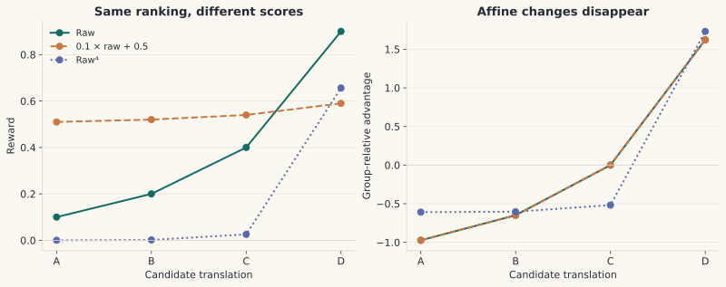
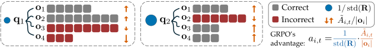
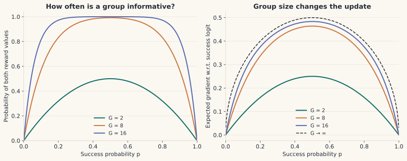
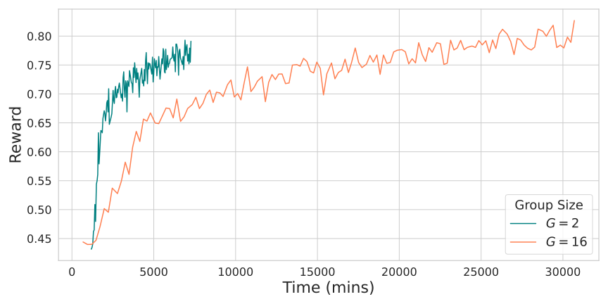
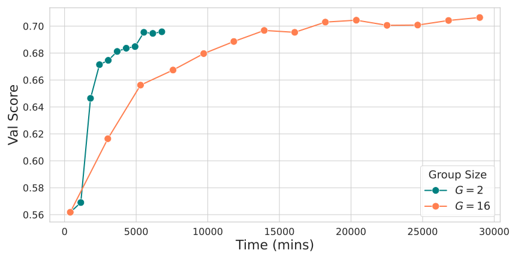
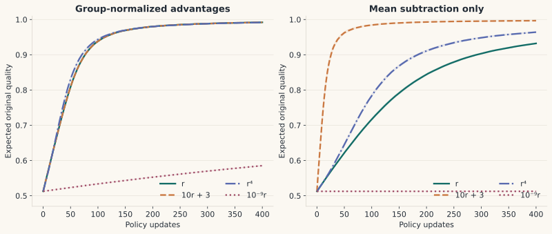

What Does GRPO Actually Optimize?
Group Relative Policy Optimization is usually described as a simple recipe. Sample a few answers to the same prompt, score them, and upweight the better ones. That description skips the step that actually changes the update. After we subtract the group mean and divide by the group's spread, "better" doesn't mean a higher raw score. It means higher than the other samples from the same prompt, measured in that prompt's own units.
This post walks through that step. We start from the reward we want, see what a baseline does, and then look at what group normalization keeps and what it throws away. After that we put the practical pieces back on: an old policy, a probability ratio, clipping, averaging over tokens, and usually a KL penalty. GRPO optimizes a clipped surrogate built from relative rewards, often with a penalty for moving away from a reference policy. The expected update doesn't generally equal the gradient of the original average reward. Normalization is one reason.
A small example makes the issue concrete. Imagine two translation prompts. On the first, the four translations are almost the same. On the second, they run from wrong to good. After normalization, the almost-same prompt can still get order-one learning weights. The raw scores dropped out. Why? Multiply every score by ten, or add the same constant to all of them, and the normalized update doesn't move. Change the gaps between scores, and it does. A KL penalty is a separate choice. I want to take those pieces apart before putting them back together.
1. Start with the reward we actually want
The objective we start from is only "get a higher score on average." The difficulty is that the translation is a sample, so we can't backpropagate through the words.
Let \(x\) be a source sentence together with the translation instruction, and let \(y\) be a complete translation sampled from a policy \(\pi_\theta(y\mid x)\). Assume prompts come from a fixed distribution \(d(x)\) and the reward function \(R(x,y)\) is fixed during the policy update. Our starting objective is
For translation, the reward might come from a quality estimator, a reference-based metric, or a combination of checks. The objective above only says that we want a higher expected score. Whether that score captures translation quality is a separate question.
The difficulty is that generating a translation involves sampling discrete tokens. We can't backpropagate through the sampled sentence in the usual way. The reward may also be non-differentiable.
The policy gradient avoids both problems by differentiating the probability of the translation. For one fixed prompt, write \(J_x(\theta)=\sum_y\pi_\theta(y\mid x)R(x,y)\). Then
This is the score-function identity behind REINFORCE. Put simply, we differentiate the model's log-probability and use the reward as a weight. We don't need a derivative of the reward with respect to the sampled tokens.
For an autoregressive model,
So a sequence-level reward can weight the log-probability gradients of every token in the translation. That gives us a learning signal. It doesn't tell us which particular word caused the translation to receive a low score.
2. A baseline changes the estimator
A raw reward pushes every sample in the same direction, only harder or softer. A baseline asks a different question: was this translation better than usual for this prompt?
Raw rewards can produce a noisy gradient estimate. The usual fix is to subtract a baseline \(b(x)\) that doesn't depend on the sampled translation:
Why can we do this? Because the extra term has expectation zero:
A suitable baseline can reduce variance without changing the expected gradient. What changes is the reference point. A translation gets a positive weight when it scores above the baseline, and a negative weight when it scores below it. We treat the baseline as fixed when we compute this policy gradient, even if another model is the thing that estimated it.
The expected reward is a natural baseline, but it isn't always the variance-minimizing one. For a scalar baseline minimizing the gradient estimator’s total variance, the optimum also depends on the squared norm of the log-probability gradient. “Subtract the mean” is useful; it isn't a general proof of minimum variance.
The sample mean needs a small qualification
There is a small catch. What happens when an answer helps set the baseline it is judged against?
Suppose we draw \(G\) independent translations for one prompt and use their mean reward \(\bar r\) as the baseline. Let \(s_i=\nabla_\theta\log\pi_\theta(y_i\mid x)\). Since \(r_i\) contributes to its own baseline,
The cross-sample terms vanish by independence; the self-term removes \(1/G\) of the gradient. With fixed \(G\), this is a constant shrinkage, so it preserves the expected direction. It still matters for step size and for the balance against a separately added KL penalty.
A leave-one-out baseline removes this issue:
Before any standard-deviation normalization, this recovers an unbiased estimator under the assumptions above. Once we divide by a random group standard deviation, this simple correction is no longer enough.
3. What group normalization keeps and removes
Dividing by the group's standard deviation changes the update again. Two prompts can now get the same update: one where every translation is bad, and one where every translation is good. What remains is the spacing inside the group, not the absolute scores.
GRPO replaces a learned critic with information from multiple responses to the same prompt. In the outcome-reward setting, it assigns a group-relative advantage to each response. This construction was introduced in DeepSeekMath, Section 4.1.
For this post, use the population standard deviation within the group:
Here \(\varepsilon\) is a small numerical stabilizer. Some implementations use a different standard-deviation convention or put the stabilizer inside the square root. Those details change the exact constants, so they should be stated when comparing results.
Consider rewards \([0.1,0.2,0.4,0.9]\). Their mean is \(0.4\), their standard deviation is about \(0.308\), and their normalized advantages are approximately \([-0.973,-0.649,0,1.622]\) when \(\varepsilon\) is negligible. The best translation is encouraged. The two below-average translations are discouraged. The translation exactly at the mean contributes no reward gradient.

For any positive scale \(a\) and prompt-dependent shift \(b\), applied equally to every response in a group,
With \(\varepsilon=0\), the advantages are unchanged. This remains true if each prompt has its own positive scale. GRPO therefore removes absolute reward offsets and units within a prompt. A group of uniformly poor translations can produce the same advantages as a group of good translations with the same relative spacing.
This doesn't make GRPO purely rank-based for a general group size. A nonlinear transformation can change the distances between scores, and therefore the normalized advantages, even when it preserves every ranking. If \(\varepsilon\) isn't negligible, even positive scaling is no longer exactly invariant.
There is also a useful distinction between zero variation and small variation. If every reward is identical, all advantages are zero. But when the scores differ slightly and \(s_r\) is still much larger than \(\varepsilon\), normalization can turn those small differences into order-one weights. If those differences mostly come from measurement noise, the algorithm will still act on them.
The update also changes across prompts
Let \(\mu_x(\theta)\) and \(\sigma_x(\theta)\) be the population reward mean and standard deviation for prompt \(x\). In the large-group limit, with negligible \(\varepsilon\), no clipping or length weighting, and \(\sigma_x>0\), the expected reward update approaches
Compared with the raw expected-reward gradient, each prompt’s contribution is multiplied by its inverse reward standard deviation. This doesn't mean that every low-variance prompt produces a larger update in absolute terms: its unnormalized gradient can also be small. It means the relative weighting has changed.
The distinction matters when parameters are shared across prompts. Their gradients can point in different directions, so changing their weights can change the combined direction. Also, this expression is generally not the gradient of \(\mathbb E_x[\mu_x/\sigma_x]\): that derivative would include a term involving \(\nabla_\theta\sigma_x\).
In practice, the sampled advantages are held fixed during each update. GRPO optimizes a local surrogate built from those values. It doesn't maximize the average freshly normalized reward; that average is zero within every group by construction.
4. The full objective adds more choices
The gradient above is the on-policy core. The loss people actually train has extra switches on top of it: an old policy, a probability ratio, clipping, averaging over tokens, and usually a KL term. Each switch changes what "the GRPO update" means.
So far, we have considered an on-policy reward gradient. Practical GRPO also uses a policy snapshot \(\pi_{\mathrm{old}}\) to generate responses, a probability ratio, clipping, and often a reference-policy penalty.
For token \(t\) of response \(i\), define
A common token-averaged GRPO surrogate is
We maximize this expression, or minimize its negative. The advantages and old policy are fixed while optimizing the sampled batch. Here \(\delta\) is the clipping threshold, distinct from the numerical stabilizer \(\varepsilon\), and \(\widehat K\) denotes the implementation’s token-level KL estimate. This is the structure of the original GRPO surrogate, rather than a specification of every later variant.
The ratio lets the update compare the current policy with the policy that generated the data. At \(\theta=\theta_{\mathrm{old}}\), its gradient gives the usual log-probability gradient. After several updates, token ratios aren't a full sequence-level importance correction: the prefix distribution has changed too. The expression is a surrogate, not an exact rewriting of \(J\) for arbitrary policy changes.
Clipping limits the objective’s incentive to keep moving a sampled token in the favored direction once its ratio passes the threshold. It doesn't impose a hard bound on the entire policy’s KL divergence. This distinction comes from the PPO clipped objective.
The factor \(1/T_i\) also matters. The original sequence policy gradient sums token gradients. Averaging them gives a response-length-dependent weight. Changing this denominator can therefore change optimization, particularly when different languages have different token lengths for comparable content.

Understanding R1-Zero-Like Training analyzes both weights and proposes Dr. GRPO, which removes the reward-spread weight and replaces the per-answer length weight with a constant. Their reasoning experiments show that these choices affect training. They don't establish which choice is best for multilingual translation.
The reference policy serves a different purpose
The old policy supplies the rollout distribution. The reference policy \(\pi_{\mathrm{ref}}\) supplies an anchor, often the checkpoint before RL training. These are different roles.
To understand the penalty, consider the idealized sequence-level objective
For an unrestricted distribution over responses, positive reference support, and \(\beta>0\), its optimum is
We get this by adding a normalization constraint and setting the derivative with respect to each response probability to zero. Higher rewards tilt the distribution away from the reference; larger \(\beta\) resists that change.
Under this raw-reward objective, replacing \(R\) with \(aR\) while holding \(\beta\) fixed changes the reward–KL tradeoff. To preserve the optimum, we would scale \(\beta\) by \(a\) as well. Under group-normalized GRPO, however, positive affine reward scaling cancels when \(\varepsilon\) is negligible. The reward surrogate then stays the same, so there is no corresponding need to rescale \(\beta\) solely because the reward units changed.
5. Why two responses are an interesting special case
Two samples are a useful special case. The size of the score gap drops out, and the update just pushes one translation up and the other down. That looks like DPO. It isn't the same loss.
With \(G=2\), unequal rewards, population standard deviation, and \(\varepsilon=0\), the advantages are simply \(+1\) and \(-1\). The size of the reward gap disappears. Equal rewards give zero advantages, using the zero-variance convention.
Ignoring clipping, length weighting, and KL, one on-policy update from a winning–losing pair is proportional to
This is the connection in It Takes Two: Your GRPO Is Secretly DPO. The comparison has a preference-learning structure: encourage one response and discourage another.
But the objectives aren't identical. DPO uses a logistic loss on a reference-adjusted log-probability margin. Its gradient contains a margin-dependent weight. Standard offline DPO also trains on an existing preference dataset, while GRPO generates responses from a changing policy. A shared pairwise direction doesn't remove these differences.
The binary-reward case is especially useful. Let a response succeed with probability \(p\). For two independent responses,
because a successful response gets advantage \(+1\) only when its partner fails, while a failed response gets \(-1\) only when its partner succeeds. Under the simplified on-policy sequence estimator, this recovers the raw binary-reward gradient in expectation. It isn't a general unbiasedness result for continuous rewards, token averaging, clipping, or repeated off-policy updates.
The group must contain different outcomes to supply a reward signal. For binary rewards,
At \(p=0.01\), this probability is about \(1.98\%\) for \(G=2\) and \(14.85\%\) for \(G=16\). But the larger group also costs eight times as many responses. A per-group comparison alone doesn't settle efficiency at a fixed rollout budget.

This also shows why larger groups do more than improve a statistical estimate. They can change the expected update. Dropping tied groups and then averaging only over the surviving groups changes it again, by conditioning training on receiving a nonzero signal.


The paper reports competitive results with two responses and lower training cost in its tested settings. One reporting detail needs clarification: the figure’s axes are labeled in minutes and extend to roughly 30,000, whereas Table 1 lists much shorter training times in hours. I would use these plots to inspect the reported learning trends, rather than calculate a speedup from the axes. The reasoning results also leave open how well the same group size works with continuous translation rewards.
6. A small translation-selection experiment
The math says normalization throws away scale. I checked that claim on a small selection problem, not on a language model. There is no shared network and no generated text, only four fixed answers per prompt.
To isolate reward normalization, I use a deliberately small setup. Each of four source sentences has four fixed candidate translations. Two prompts translate into French and two into Spanish. Each prompt has its own categorical policy over the candidates, initialized uniformly. There is no pretrained language model and no parameter sharing between prompts.
The candidates receive constructed quality scores \(r\in\{0,0.35,0.70,1\}\). These are illustrative labels, not human annotations or scores from a translation metric. For example:
| Source: “The train leaves at six.” | Assigned quality |
|---|---|
| Le jardin est vert. | 0.00 |
| Le train arrive à six heures. | 0.35 |
| Le train part. | 0.70 |
| Le train part à six heures. | 1.00 |
The experiment compares four reward functions: \(r\), \(10r+3\), \(r^4\), and \(10^{-9}r\). All preserve the candidate ranking. The last deliberately makes reward variation smaller than the numerical stabilizer.
For each prompt, each update samples \(G=8\) responses. I compare group-normalized advantages with mean subtraction alone, keeping the same samples’ random-number streams across conditions. Both use SGD, learning rate \(0.3\), an exact categorical KL penalty to the uniform reference with \(\beta=0.05\), and 400 updates. The normalized condition uses \(\varepsilon=10^{-8}\) outside the square root. Results cover 40 seeds, numbered 0–39.
There is one gradient step per fresh batch. Thus the probability ratios are one when the gradient is evaluated, and clipping is inactive. Each complete candidate is treated as one action, so token-length effects are absent. This tests the on-policy core of the GRPO update, rather than a full LLM training pipeline.

| Training reward | Group-normalized: final quality | Mean subtraction only: final quality |
|---|---|---|
| \(r\) | 0.9921 ± 0.0005 | 0.9323 ± 0.0016 |
| \(10r+3\) | 0.9921 ± 0.0005 | 0.9967 ± 0.0003 |
| \(r^4\) | 0.9918 ± 0.0006 | 0.9642 ± 0.0013 |
| \(10^{-9}r\) | 0.5853 ± 0.0007 | 0.5125 ± <0.0001 |
Mean ± sample standard deviation across seeds, after 400 updates. Initial expected quality is 0.5125.
Three observations stand out. First, normalized training with \(r\) and \(10r+3\) follows effectively the same trajectory. Across all recorded steps and seeds, the largest absolute quality difference is below \(9\times10^{-9}\). Repeating the comparison with \(\varepsilon=0\) matches within numerical tolerance.
Second, the nonlinear reward changes the advantages, although its effect on the normalized learning curve is modest in this particular setup. This is a useful limit on the result: changing the update doesn't imply a large practical difference in every task.
Third, shrinking rewards below \(\varepsilon\) substantially weakens normalized learning. With mean subtraction alone, scaling matters directly: \(10r+3\) changes both the size of the reward gradient and its balance against the fixed KL penalty. The additive constant disappears, but the multiplier remains.
The normalized method’s higher score here isn't evidence that it is universally better. The comparison uses one shared learning rate and KL coefficient, rather than tuning each method. The policies also select from four fixed answers instead of generating new translations.
Sources.
- DeepSeekMath: Pushing the Limits of Mathematical Reasoning in Open Language Models.
- Proximal Policy Optimization Algorithms.
- Direct Preference Optimization: Your Language Model is Secretly a Reward Model.
- Understanding R1-Zero-Like Training: A Critical Perspective.
- It Takes Two: Your GRPO Is Secretly DPO.